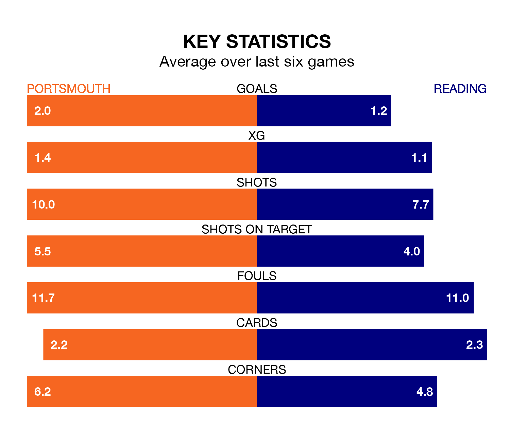

Portsmouth are heavy favourites to keep all three points at home in Saturday's kick-off against Reading.
Pompey, who sit top of EFL League One with 33 games played, are priced at 1.6 to seal victory at Fratton Park.
Sitting 13 places and 30 points behind them in the table, Reading are 5.3 to win with *Betting Company*, while the draw is at 3.6.
With 54 goals in 33 games so far this season, Portsmouth are scoring more than average in the league with 1.6 goals per game. And they are conceding fewer than average, letting in 29 goals at a rate of 0.9 per game.
Reading, meanwhile, are average scorers, with 1.3 goals per game. They have conceded 1.4 goals per game.
With Will Norris between the sticks, Pompey can rely on one of the league's safest pair of hands. He has kept 15 clean sheets in his 33 appearances this season, and no 'keeper has prevented the opposition scoring more often in EFL League One.
In the Royals's net, David Button has seven clean sheets in 31 games. He has conceded a goal every 78 minutes, 50% more often than the 114 minutes between goals for Norris.
The hosts are in fantastic form in EFL League One, with five wins and a draw from their last six games.
With three wins and three draws over that period, the away side's form is worse – they have taken 12 points from 18, compared to Portsmouth's 16.
Portsmouth's last match was on Tuesday, a 3-1 win against Cambridge United, with Abu Kamara, Kusini Boja Yengi and Myles Peart-Harris getting the goals for Pompey.
Reading drew 1-1 with Fleetwood Town last time out, also on Tuesday, with Lewis Wing on the scoresheet.
Updated: 12:06 (UTC), 15/02/24